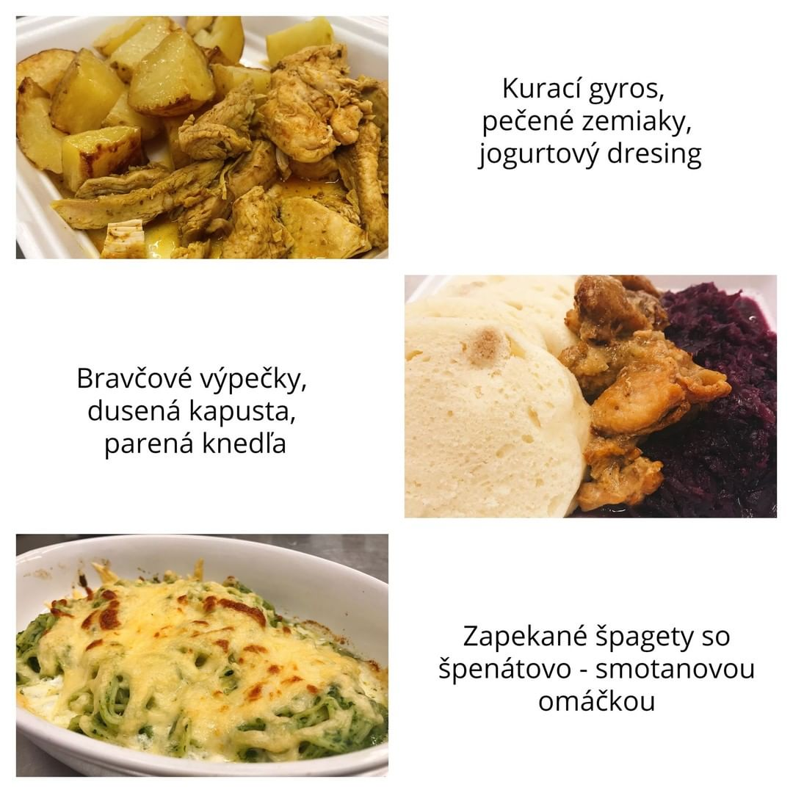

Bravčové mäso podľa @restauraciasenec — Normy Jedál
Tradíciu Zeleného Štvrtku môžete dodržať so zapekanými špenátovými špagetami. A pre tých, čo si chcú pred pôstom užiť ešte mäsom máme bravčové výpečky alebo kurací gyros #restauracianostalgia #nostalgiasenec #obedovemenu #obedovemenusenec #donaskasenec #rozvozsenec #kuracie #kuraciemaso #kuracigyros #zapekanecestoviny #cestoviny #cestovinysospenatom #pecenebravcove #bravcovemaso #szenc #napimenü
https://www.hotelnostalgia.sk/obedove-menu-na-29-03-01-04-2021/